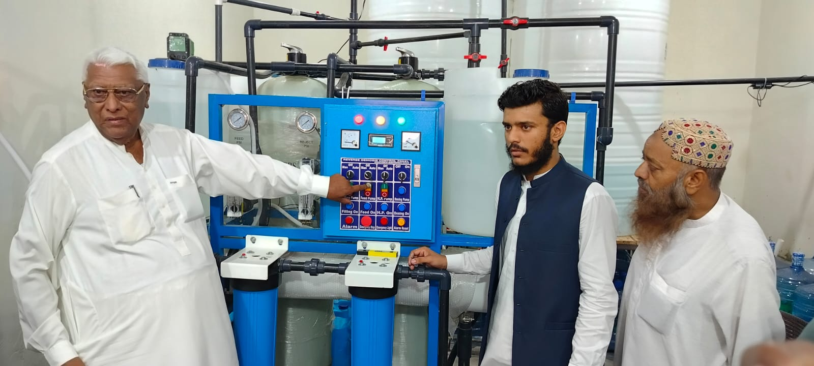
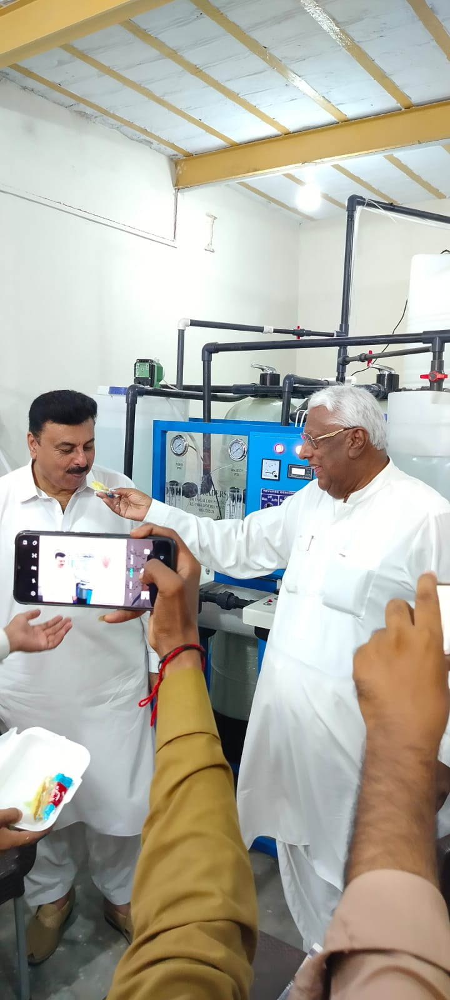

Welcome to [Pure MG Drops]
At [Pure MG Drops], we are passionate about providing clean, safe, and healthy drinking water to communities, homes, and industries. Our state-of-the-art water filtration plant utilizes advanced Reverse Osmosis (RO) technology to remove impurities, contaminants, and pollutants, producing high-quality bottled water and filtered water solutions.
*Our Services:*
- Bottled Water: We offer a range of bottled water products, from still to sparkling, in various sizes and packaging options.
- Filtration Systems: Our expert team designs, installs, and maintains customized filtration systems for homes, offices, and industries.
- Water Testing and Analysis: We conduct regular water testing and analysis to ensure our water meets the highest standards of quality and safety.
- Maintenance and Support: Our dedicated team provides regular maintenance, repair, and replacement services to ensure your filtration systems run smoothly.
*Our Commitment:*
- Quality: We adhere to strict quality control measures to ensure our water meets international standards.
- Sustainability: We strive to minimize our environmental footprint through eco-friendly practices and sustainable solutions.
- Customer Satisfaction: We prioritize exceptional customer service, ensuring prompt responses, timely deliveries, and expert support.
*Why Choose Us:*
- Expertise: Our team has extensive experience in water treatment and filtration.
- State-of-the-Art Technology: Our plant utilizes advanced RO technology for superior water quality.
- Customized Solutions: We tailor our services to meet your specific needs and requirements.
Opening Ceremony
 